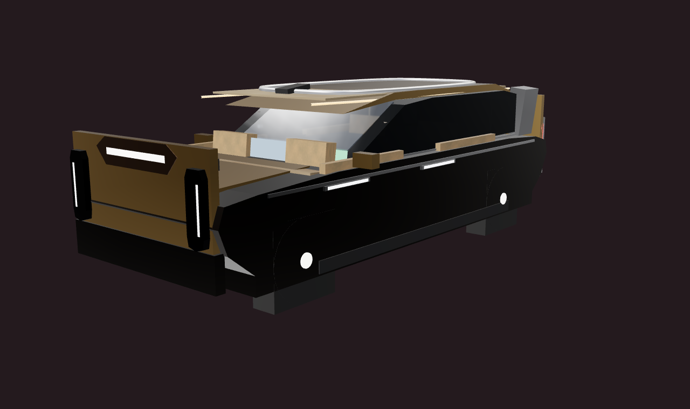
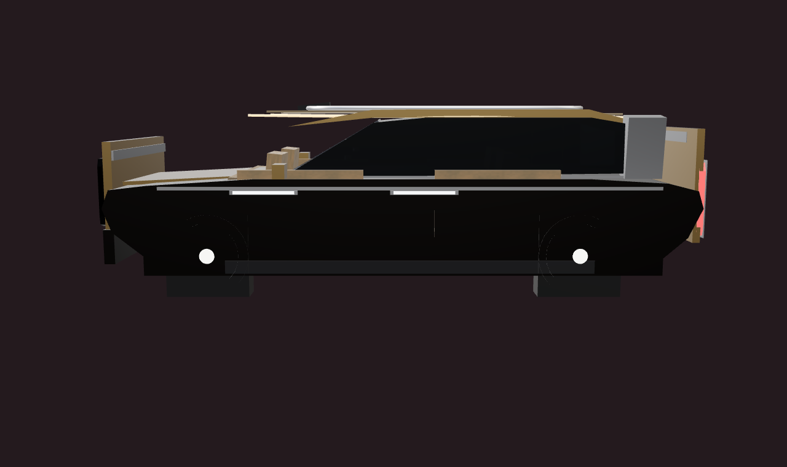
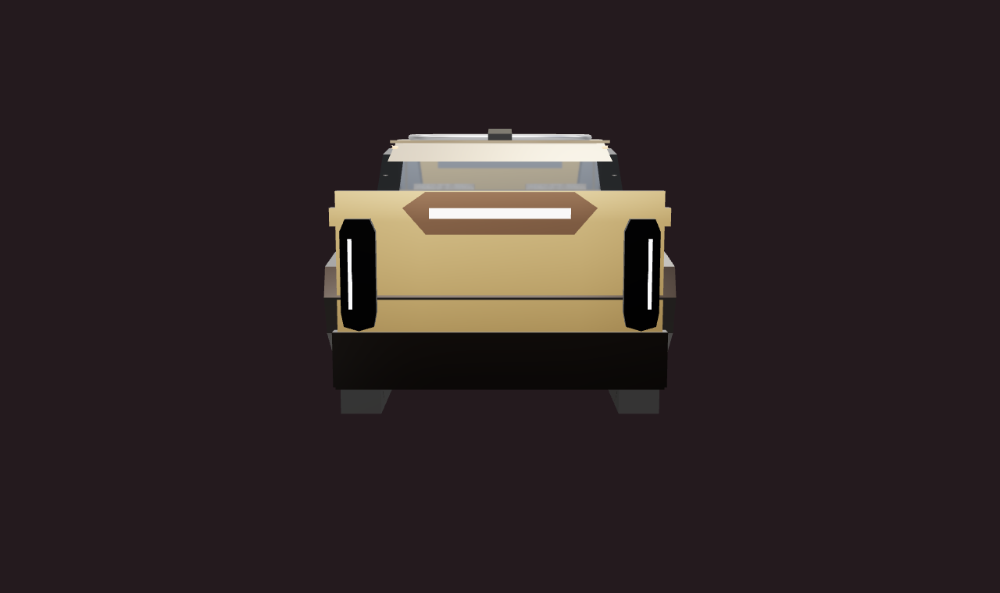
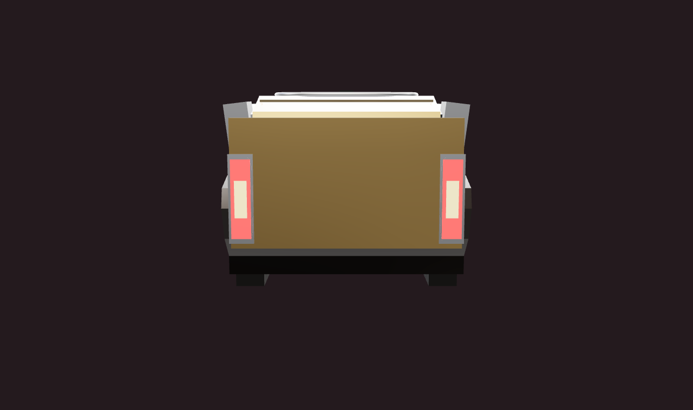
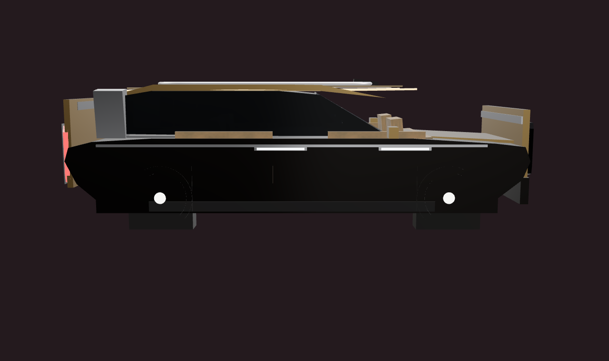
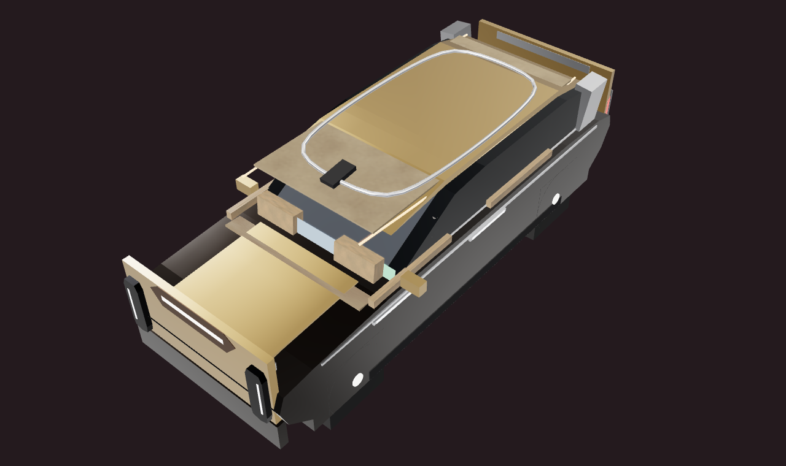
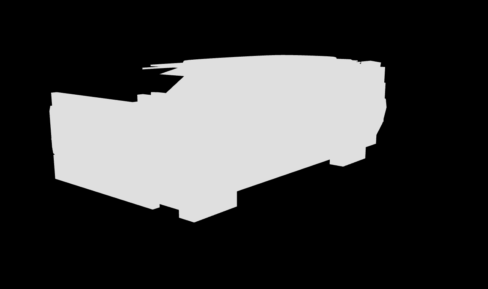
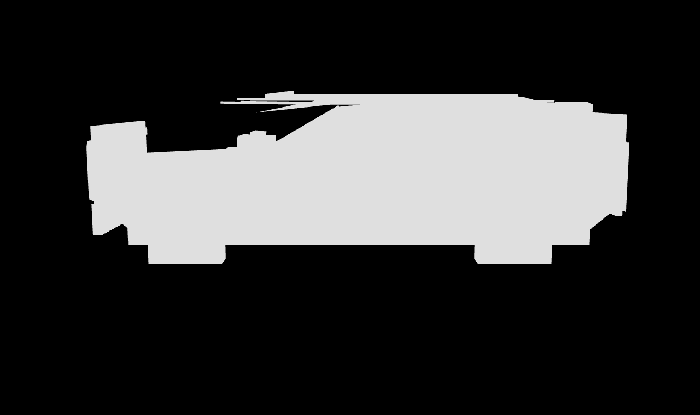
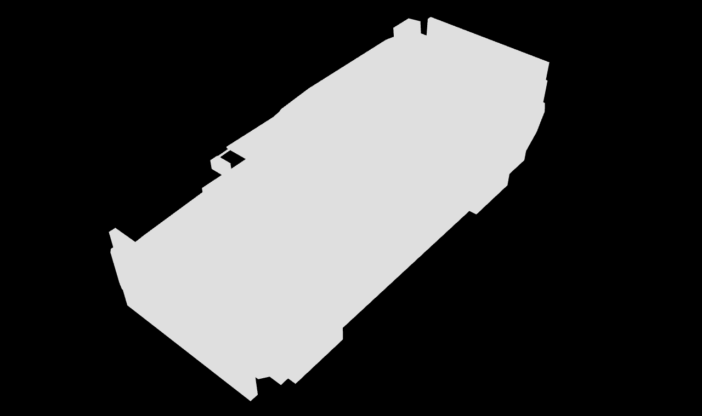

hero az40 p12
hero az40 p12
az90 侧
az0 前
az180 后
az270 侧
top p42
stripped hero
stripped az90
stripped top| 项 | 结果 |
|---|---|
| 运行时组件数 | 95 = macro10 + meso85（structural-pass 范围全量；micro 46 按流水线设计待 form-refinement） |
| renderer.info | tris=44556, calls=182（preview 页；预算 targetTriangles=58000 → 77%，maxDrawCalls=42 为游戏整帧口径、preview 页含 lookdev 灯光/地面不可直接对比） |
| turntable 四方位（0/90/180/270） | PASS：covered=true, segmentationReliable=true, holed=false, degenerate=false（stripped 素模图；--allow-holes 未触发） |
| multi-angle 退化视图 | 无 degenerate（5 视角面积比 0.975~1.031） |
| 调色板 ΔE（spec-recipe vs 渲染主色簇） | max 61.5 = lantern-emitter（自发光件在 5 簇全局口径下天然偏高，脚本自述口径限制）；车漆/镀铬主色簇匹配 |
| roof-rails 修复 | 原位于地面 y[-0.06,0.06] → 现贴车顶 y[1.710,1.754]，z[-1.876,0.876] 在 roof 范围内，八角形闭环消除 CatmullRom 过冲 |
| lidar-wedge 修复 | 原悬浮车顶上方 0.136m 且越过前缘 → 现 y[1.706,1.794] 贴合车顶，z[0.638,0.962] 在 roof 前缘 0.98 内 |
| reference-based Tier1 | BLOCKED：外部参考图已被权利人合规移除（仓库内不可复验），silhouetteIoU/aspect/scale 基准缺失 |
| interior_difference | 无法运行：无同机位 blockout 基线渲染留存（blockout 证据为游戏运行时截图，机位/光照不同，像素带状对比无意义） |